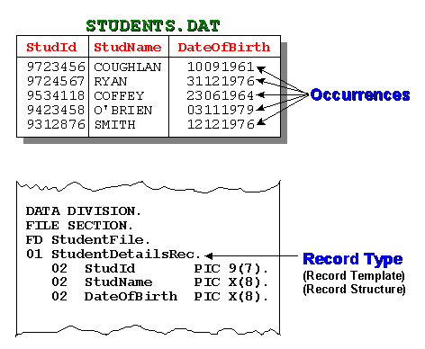
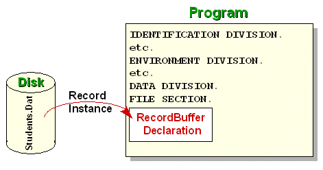
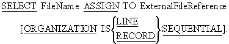
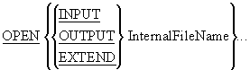
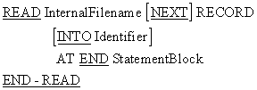

Files are repositories of data that reside on backing storage (hard disk, magnetic tape or
CD-ROM). Nowadays, files are used to store a variety of different types of information, such
as programs, documents, spreadsheets, videos, sounds, pictures and record-based data.
Although COBOL can be used to process these other kinds of data file, it is generally used
only to process record-based files.
In this, and subsequent file-oriented tutorials, we examine how COBOL may be used to process
record-based files.
There are essentially two types of record-based file organization:
- Serial Files (COBOL calls these Sequential Files)
- Direct Access Files.
In a Serial File, the records are organized and accessed serially.
In a Direct Access File, the records are organized in a manner that allows direct access to
a particular record without having the read any of the preceding records.
In this tutorial, you will discover how COBOL may be used to process serial files.
By the end of this unit you should -
- Understand concepts and terminology like file, record, field and record buffer.
- Be able to write the file and record declarations for a Sequential File.
- Understand how
READ verbs works
-
Be able to use the
READ,
WRITE, OPEN and
CLOSE verbs to process a Sequential File.
- Introduction to COBOL
- Declaring data in COBOL
- Basic Procedure Division Commands
- Selection Constructs
- Iteration Constructs
COBOL is generally used in situations where the volume of data to be processed is large.
These systems are sometimes referred to as "data intensive" systems. Generally, large
volumes arise not because the data is inherently voluminous but because the same items of
information have been recorded about a great many instances of the same object. Record-based
files are used to record this information.
In record-based files;
-
We use the term file, to describe a collection of one or more occurrences
(instances) of a record type (template).
-
We use the term record, to describe a collection of fields which record
information about an object.
-
We use the term field, to describe an item of information recorded about an
object (e.g. StudentName, DateOfBirth).
It is important to distinguish between a record occurrence (i.e. the values of a record) and
the record type or template (i.e. the structure of the record).
Each record occurrence in a file will have a different value but every record in the file
will have the same structure.
For instance, in the student details file, illustrated below, the occurrences of the student
records are actual values in the file. The record type/template describes the
structure of each record occurrence.

Before a computer can do any processing on a piece of data, the data must be loaded into main
memory (RAM). The CPU can only address data that is in RAM.
A record-based file may consist of hundreds of thousands, millions or even tens of millions of
records, and may require gigabytes of storage. Files of this size cannot be processed by loading
the whole file into memory in one go. Instead, files are processed by reading the records into
memory, one at a time.
To store the record read into memory and to allow access to the individual fields of the record,
a programmer must declare the record structure (see the diagram above) in his program. The
computer uses the programmer's description of the record (the record template) to set aside
sufficient memory to store one instance of the record. The memory allocated for storing a record
is usually called a "record buffer".
A record buffer is capable of storing the data recorded for only one instance of the record. To
process a file a program must read the records one at a time into the record buffer. The record
buffer is the only connection between the program and the records in the file.

If a program processes more than one file, a record buffer must be defined for each file.
To process all the records in an INPUT file, we must ensure
that each record instance is copied (read) from the file, into the record buffer, when required.
To create an OUTPUT file containing data records, we must
ensure that each record is placed in the record buffer and then transferred (written) to the
file.
To transfer a record from an input file to an output file we must read the record into the input
record buffer, transfer it to the output record buffer and then write the data to the output
file from the output record buffer. This type of data transfer between 'buffers' is quite common
in COBOL programs.
Suppose we want to create a file to hold information about the students in the University. What
kind of information do we need to store about each student?
One thing we need to store is the student's name. Each student is assigned an identification
number; so we need to store that as well. We also need to store the date of birth, and the code
of the course the student is taking. Finally, we are going to store the student's gender. These
items are summarized below;
- Student Id
- Student Name
- Date of birth
- Course Code
- Gender
To create a record buffer large enough to store one instance of a record, containing the
information described above, we must decide on the type and size of each of the fields.
-
The student identity number is 7 digits in size so we need to declare the data-item to hold
it as PIC 9(7).
-
To store the student name, we will assume that we require only 10 characters. So we can
declare a data-item to hold it as PIC X(10).
- The date of birth is 8 digits long so we declare it as PIC 9(8).
- The course code is 4 characters long so we declare it as PIC X(4).
- Finally, the gender is only one character so we declare it as PIC X.
The fields described above are individual data items but we must collect them together into a
record structure as follows;
01 StudentRec.
02 StudentId PIC 9(7).
02 StudentName PIC X(10).
02 DateOfBirth PIC 9(8).
02 CourseCode PIC X(4).
02 Gender PIC X.
The record description above is correct as far as it goes. It reserves the correct amount of
storage for the record buffer. But it does not allow us to access all the individual parts of
the record that we might require.
For instance, the name is actually made up of the student's surname and initials while the date
consists of 4 digits for the year, 2 digits for the month and 2 digits for the day .
To allow us to access these fields individually we need to declare the record as follows;
01 StudentRec.
02 StudentId PIC 9(7).
02 StudentName.
03 Surname PIC X(8).
03 Initials PIC XX.
02 DateOfBirth.
03 YOBirth PIC 9(4).
03 MOBirth PIC 99.
03 DOBirth PIC 99.
02 CourseCode PIC X(4).
02 Gender PIC X.
In this description, StudentName is a group item consisting of Surname and Initials, and
DateOfBirth consists of YOBirth, MOBirth and DOBirth.
The record type/template/buffer of every file used in a program must be described in the
FILE SECTION by means of an
FD (file description) entry. The
FD entry consists of the letters
FD and an internal name that the programmer assigns to the
file.
So the full file description for the students file might be;.
DATA DIVISION.
FILE SECTION.
FD StudentFile.
01 StudentRec.
02 StudentId PIC 9(7).
02 StudentName.
03 Surname PIC X(8).
03 Initials PIC XX.
02 DateOfBirth.
03 YOBirth PIC 9(4).
03 MOBirth PIC 99.
03 DOBirth PIC 99.
02 CourseCode PIC X(4).
02 Gender PIC X.
Note that we have assigned the name StudentFile as the internal file name. The actual name of
the file on disk is Students.Dat.
Although the name of the students file on disk is Students.Dat we are going to refer to
it in our program as StudentFile. How can we connect the name we are going to use internally
with the actual name of the program on disk?
The internal file name used in a file's FD entry is
connected to an external file (on disk, tape or CD-ROM) by means of the
SELECT and
ASSIGN clause. The
SELECT and ASSIGN clause
is an entry in the FILE-CONTROL paragraph in the
INPUT-OUTPUT SECTION in the
ENVIRONMENT DIVISION.
ENVIRONMENT DIVISION.
INPUT-OUTPUT SECTION.
FILE-CONTROL.
SELECT StudentFile
ASSIGN TO "STUDENTS.DAT".
DATA DIVISION.
FILE SECTION.
FD StudentFile.
01 StudentRec.
02 StudentId PIC 9(7).
02 StudentName.
03 Surname PIC X(8).
03 Initials PIC XX.
02 DateOfBirth.
03 YOBirth PIC 9(4).
03 MOBirth PIC 99.
03 DOBirth PIC 99.
02 CourseCode PIC X(4).
02 Gender PIC X.

The Microfocus COBOL compiler recognizes two kinds of Sequential File organization
LINE SEQUENTIAL
and
RECORD SEQUENTIAL.
LINE SEQUENTIAL files, are files in which each record is
followed by the carriage return and line feed characters. These are the kind of files
produced by a text editor such as Notepad.
RECORD SEQUENTIAL files, are files where the file
consists of a stream of bytes. Only the fact that we know the size of each record allows us
to retrieve them. Files that are not record based, can be processed by defining them as
RECORD SEQUENTIAL.
The ExternalFileReference can be a simple file name, or a full, or a partial, file
specification. If a simple file name is used, the drive and directory where the program is
running is assumed but we may choose to include the full path to the file. For instance, we
could associate the StudentFile with an actual file using statements like:
SELECT StudentFile
ASSIGN TO "D:\Cobol\ExampleProgs\Students.Dat"
SELECT StudentFile
ASSIGN TO "A:\Students.Dat"
The SELECT and
ASSIGN clause allows us to assign a meaningful name to
an actual file on a storage device. The advantage of this is that it makes our programs more
readable and more easy to maintain. If the location of the file, or the medium on which the
file is held, changes then the only change we need to make to our program, is to change the
entry in the SELECT and
ASSIGN clause.
Sequential files are uncomplicated. To write programs that process Sequential Files you only
need to know four new verbs - the OPEN,
CLOSE, READ and
WRITE.
You must ensure that (before terminating) your program closes all the files it has opened.
Failure to do so may result in data not being written to the file or users being prevented from
accessing the file.

Before your program can access the data in an input file or place data in an output file, you
must make the file available to the program by
OPENing it.
When you open a file you have to indicate how you intend to use it (e.g.
INPUT, OUTPUT,
EXTEND) so that the system can manage the file
correctly.Opening a file does not transfer any data to the record buffer, it simply provides
access.
OPEN notes
When a file is opened for
INPUT or EXTEND, the
file must exist or the OPEN will fail.
When a file is opened for INPUT, the
Next Record Pointer
is positioned at the beginning of the file.
When the file is opened for EXTEND, the Next Record Pointer
is positioned after the last record in the file. This allows records to be appended to the file.
When a file is opened for OUTPUT, it is created if it does
not exist, and is overwritten, if it already exists.
CLOSE InternalFileName...
You must ensure that, before terminating, your program closes all the files it has opened.
Failure to do so may result in some data not being written to the file or users being prevented
from accessing the file.

Once the system has opened a file and made it available to the program it is the programmers
responsibility to process it correctly. To process all the records in the file we have to
transfer them, one record at a time, from the file to the file's record buffer. The READ is
provided this purpose.
The READ copies a record occurrence/instance from the file and places it in the record buffer.
READ notes
When the
READ attempts to read a record from the file and encounters
the end of file marker, the AT END is triggered and the
StatementBlock following the AT END is executed.
Using the INTO Identifier clause, causes the data to
be read into the record buffer and then copied from there, to the Identifier, in one
operation. When this option is used, there will be two copies of the data. One in the record
buffer and one in the Identifier. Using this clause is the equivalent of executing a
READ and then moving the contents of the record buffer to
the Identifier.
The animation below demonstrates how the READ works. When a
record is read it is copied from the backing storage file into the record buffer in
RAM. When an attempt to
READ detects the end of file the
AT END is triggered and the condition name EndOfFile is set
to true. Since the condition name is set up as shown below, setting it to true fills the whole
record with HIGH-VALUES.
FD StudentFile.
01 StudentRec.
88 EndOfFile VALUE HIGH-VALUES.
02 StudentId PIC 9(7).
etc

WRITE RecordName [FROM
Identifier]
The WRITE verb is used to copy data from the record buffer
(RAM) to the file on backing storage (Disk, tape or CD-ROM).
To WRITE data to a file we must move the data to the record
buffer (declared in the FD entry) and then WRITE the
contents of record buffer to the file.
When the WRITE..FROM is used the data contained in the
Identifier is copied into the record buffer and is then written to the file. The
WRITE..FROM is the equivalent of a
MOVE
Identifier TO RecordBuffer statement followed by a
WRITE RecordBuffer statement.
If you were paying close attention to the syntax diagrams above you probably noticed that while
we READ a file, we must
WRITE a record.
The reason we read a file but write a record, is that a file can contain a number of different
types of record. For instance, if we want to update the students file we might have a file of
transaction records that contained Insertion records and Deletion records. While the Insertion
records would contain all the student record fields, the Deletion only needs the StudentId.
When we read a record from the transaction file we don't know which of the types will be
supplied; so we must - READ Filename . It is the
programmers responsibility to discover what type of record has been supplied.
When we write a record to the a file we have to specify which of the record types we want to
write; so we must - WRITE RecordName .
The example program below demonstrates the items discussed above. The program gets records from
the user and writes them to a file. It then reads the file and displays part of each record.
>>SOURCE FORMAT IS FREE
IDENTIFICATION DIVISION.
PROGRAM-ID. SeqWriteRead.
AUTHOR. Michael Coughlan.
*> Example program showing how to create a sequential file
*> using the ACCEPT and the WRITE verbs and then read and
*> display its records using the READ and DISPLAY.
*> Note: In this version of COBOL pressing the Carriage Return (CR)
*> without entering any data results in StudentDetails
*> being filled with spaces.
ENVIRONMENT DIVISION.
INPUT-OUTPUT SECTION.
FILE-CONTROL.
SELECT StudentFile ASSIGN TO "STUDENTS.DAT"
ORGANIZATION IS LINE SEQUENTIAL.
DATA DIVISION.
FILE SECTION.
FD StudentFile.
01 StudentRec.
88 EndOfStudentFile VALUE HIGH-VALUES.
02 StudentId PIC 9(7).
02 StudentName.
03 Surname PIC X(8).
03 Initials PIC XX.
02 DateOfBirth.
03 YOBirth PIC 9(4).
03 MOBirth PIC 9(2).
03 DOBirth PIC 9(2).
02 CourseCode PIC X(4).
02 Gender PIC X.
PROCEDURE DIVISION.
Begin.
OPEN OUTPUT StudentFile
DISPLAY "Enter student details using template below."
DISPLAY "Enter no data to end"
PERFORM GetStudentRecord
PERFORM UNTIL StudentRec = SPACES
WRITE StudentRec
PERFORM GetStudentRecord
END-PERFORM
CLOSE StudentFile
OPEN INPUT StudentFile.
READ StudentFile
AT END SET EndOfStudentFile TO TRUE
END-READ
PERFORM UNTIL EndOfStudentFile
DISPLAY StudentId SPACE StudentName SPACE CourseCode
READ StudentFile
AT END SET EndOfStudentFile TO TRUE
END-READ
END-PERFORM
CLOSE StudentFile
STOP RUN.
GetStudentRecord.
DISPLAY "NNNNNNNSSSSSSSSIIYYYYMMDDCCCCG"
ACCEPT StudentRec.